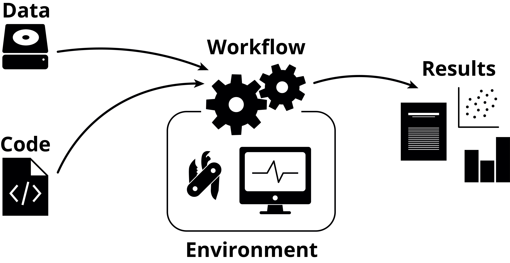

Introduction
This material focuses on general information about reproducibility, i.e. why you should work reproducibly, what it means to work reproducibly, how to start, and so on. There will be no practical examples in this material itself, contrary to most other RSE Tech Group write-ups, but links to the plethora of material NBIS already has will be given throughout when appropriate.
What does reproducibility mean?
It’s important to know exactly what we mean when we talk about reproducibility, as there are several related concepts that often get mixed up with it:
| Data | |||
| Same | Different | ||
| Code | Same | Reproducible | Replicable |
| Different | Robust | Generalisable | |
So, reproducibility is using the same data and the same code to get the same results. This sounds easy in theory, but is often harder in practice.
Why should you work reproducibly?
- It’s good scientific practice and something that should go into or be referenced in the Materials & Methods section in the paper.
- It helps you to be organised and structured if you aren’t already, which can make the work smoother and have less friction.
- It makes fixing errors both easier and quicker.
- It will help both you and your collaborators more easily understand the whole of the project’s scope, steps and results - which is more often than you think highly relevant for the future you.
- It will save you time by working more efficiently.
Your time and reproducibility
Something that is often talked about when it comes to reproducibility is the time it takes. While learning something new always takes time, once you’ve gotten used to working reproducibly you will actually save time, even though you are most likely doing more things. Working reproducibly is, perhaps non-intuitively, more time-efficient than not doing so.
In the context of NBIS Support, we are supposed to spend time on working reproducibly, and this time is part of the project’s support hours - i.e. working reproducibly is part of the scientific work we do for the groups we consult for. While we cannot be responsible for the project as a whole, we are responsible for the bioinformatics analyses we perform, and they need to be reproducible. You can find more information about this at the NBIS reproducibility guidelines.
An overview of reproducibility

There are generally three parts to working reproducibly:
- Your code
- Your environment
- Your workflow
Additionally, there’s your data (which, arguably, should be number zero), but correctly storing this with backups has more to do with data management than reproducibility.
There are many different solutions and tools for each of these steps, and which one you choose varies from person to person. The important thing is not exactly which solution or tool you pick, but rather that you pick something. The chosen solutions or tools of one person can differ to both small and large extents to somebody else, and this is totally fine, as long as the end-goal of reproducibility is achieved.
Another important point is that reproducibility is not binary, but rather a gradient: you can, for example, do well in one area and worse (or nothing at all) in another. Maybe you don’t achieve the idealised version of “perfect” reproducibility, but maybe you’ve gotten somewhere along the way there. We should absolutely strive to get all the way there, but don’t be discouraged by feelings of not doing enough at this particular moment, just keep working at it and learn more as you go.
While this material lists several of the tools that can help you with each of these steps, it is not aimed to go through them in any detail whatsoever. This material talks about reproducibility at a higher level, and links to further reading are instead given for you to delve deeper wherever you deem necessary.
Your code
You need to organise and store your code somehow so that you or somebody else can either re-use or explore it later. Somebody unfamiliar with your code should be able to understand what it is doing, given a familiarity with the field in which you are working.
Get organised
You should organise everything related your project. Stick to one self-contained directory per project, where you keep everything related to that project. Exactly which organisational structure you pick matters less than that you organise in the first place. Be consistent, be descriptive. The structure will be different depending not only on your tastes, but also on which tools you use.
An example of a simple project directory structure could look like this:
code/ Code needed to go from input files to final results
data/ Raw data - this should never edited
doc/ Documentation of the project
env/ Environment-related files
results/ Output from workflows and analyses
README.md Project description and instructionsIt’s important to document how your project is structured so that others can also navigate your project. Click here to learn more: Documentation @ Tools for Reproducible Research
Version control
Git is a version control system that allows you to keep track of your code and changes done to it over time. This is the de facto standard used in bioinformatics and software engineering at large.
If you use the NBISweden GitHub organisation to store your projects, you should name the repository on the <PROJECT TYPE>-<REDMINE ISSUE>-YY-<SHORT NAME>, where the project type is UF for user fee projects and PR for peer review projects. The short name should ideally only be a single or two words that relate to the project somehow. An example is UF-7235-24-kidney.
Literate programming
Quarto and Jupyter are computational notebooks that allow you to combine code together with Markdown in a seamless way.
Your environment
Even if you’ve correctly stored and version controlled your code, that’s no guarantee that somebody else (or future you) will be able to actually execute it, or that it yields the same results as when you wrote it. For this you need to control the computational environment within which the code is executed: which packages are installed, with which versions, which dependencies, their versions, and so on.
Package managers
There are many package managers out there that help you install and manage the various packages in your environment. Some are for a particular language, while others are language-agnostic. Conda could be considered industry standard for this, but Pixi is gaining traction as a drop-in replacement and general improvement upon it.
Containers
While package managers control for your packages and their dependencies, they don’t control the entire OS, which can affect portability. Containers solve this, and additionally have a higher level of isolation, making the decoupling from other environments easier. Working with and understanding containers generally have a higher barrier of entry compare to package managers, but are much more powerful once you do. Indeed, once you’ve started working with them and feel more comfortable with them, they can actually be easier to work with, compared to package managers.
Your workflow
The word “workflow” here means “what you do, in what order, with what data”. So, what code are you running, in which environments, with which input data. This can be solved with clear documentation (e.g. listing which scripts are run in which order) or by using workflow managers.
Workflow managers
While workflow managers can have a similarly high barrier of entry as for containers, they can also greatly facilitate iteration and exploration during a project’s lifetime, as they remove all manual work related to running scripts with the correct inputs, parameters, and so on. Workflow managers are not only useful for large, generalised production-level pipelines (such as those available at nf-core), but can also be used for more bespoke.
One great feature that workflow managers have is that they make environment control a lot simpler, as each individual step in the workflow can have a separate environment. This means fewer issues with package incompatibilities and simpler dependency management overall. The two most common workflow managers for bioinformatics, Nextflow and Snakemake, allow for using both Conda and containers.
Where should you start?
If you don’t work reproducibly today, or feel you are behind in some areas, it can feel like a huge undertaking to even get started. Instead of feeling bad, try instead to remember that reproducibility is not binary, and every little step you take is a step in the right direction. Start with seeing where you have the most to gain: for example, if you don’t use Git, that’s definitely a great place to start. If you’ve already organised your projects and are using Git but are missing environment control, start with Conda. Maybe you already use Quarto or Jupyter for notebooks, but you want to combine it with a workflow manager.
It matters less where you currently are, and more where you want to do. Take one thing at a time if it feels daunting, or dive deep and learn all the tools you want in one go and incorporate them all into your daily work - it’s all up to you.
Don’t be afraid to experiment
There are quite a few tools and solutions that can help solve each of the three parts of reproducibility, and it can be hard to know which tool or solution is the best for you. Try them all out and experience them for yourself, and find the one that you prefer.
Sometimes one tool neatly fits into how you are currently working, and that can make the decision to pick that tool over another easy. Other times you may find that no tool fits your current way or working, and you will have to adapt - if you’re lucky, you’ll find a new way of working that you actually prefer over how you did it before! Don’t be afraid to experiment and take your pick of everything you learn.
There is great value in seeing what others do, which tools they choose and how they use them, etc. This shows you what you could do, if you want, but it’s important to remember that not every solution a colleague is using may fit you directly. Instead, try to see what others are doing, but adapt that to your own needs as necessary.
Make it your own
The way you work is your own, and you can make many of the tools work the way you prefer. Make a file with your most commonly used Git aliases, explore new VSCode extensions that could give you cool new editing options, create a GitHub template repository for your projects, start a dotfiles repository to store all your configs in… Your way of working doesn’t need to be set in stone, but can evolve along with you and the new tools that are bound to come along.